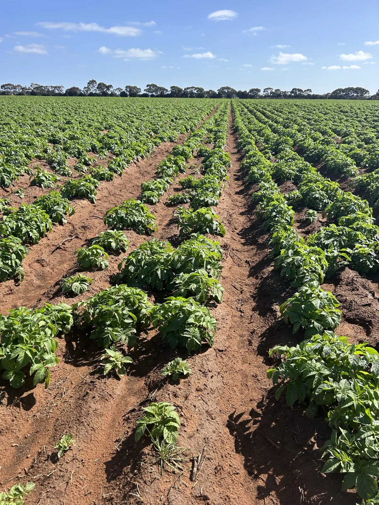

Review starting conditions
Review the crop, production system, starting conditions, market target and results already available.

Short crop cycles leave less time to assess a problem and respond. Hybrid-Ag reviews test results and field observations with the crop’s stage and market requirements, using those findings to guide prescription blends and other nutrition decisions.
Short crop cycles provide frequent opportunities to compare results. Reviewing the test data alongside what happened during the crop helps the team decide what needs attention now and what to reconsider before the next planting.
Review the crop, production system, starting conditions, market target and results already available.
Connect crop stage, field observations and representative testing during the growing cycle.
Compare harvest, pack or processor information with what happened through the crop.
Use the findings when planning the next planting.
Harvested weight is one measure. Saleable yield, grade and quality also matter, with the requirements varying by crop and customer.
The saleable portion of the crop, not simply everything harvested from the paddock or block.
Retailer, market or processor requirements interpreted alongside the crop’s intended destination.
How evenly the crop develops and whether it will be ready for the planned harvest.
The crop-specific measures that matter after harvest, through packing, processing, storage or shelf life.
Testing and recommendations take account of how the crop grows, its current stage and what the customer requires.
Spinach, lettuce, rocket, mizuna, tatsoi, chard, kale, herbs and microgreens.
Broccoli, cauliflower and cabbage, where formation, uniformity and harvest specification inform the recommendations.
For carrots and onions, consider establishment and crop development through to harvest and the required market grade.
Consider saleable size and quality alongside processor or market requirements.
Cycle length changes with crop, season and production system. Recommendations account for the actual growth stage and production requirements of each planting.
Set the crop and market target, review rotation and previous results, and establish the soil and water context for the paddock or block.
Check emergence or transplant establishment, root-zone conditions and how evenly the crop begins.
Assess canopy or leaf development and plant results against the crop’s current requirements.
Review leaf, head, root or tuber development against the crop’s intended use.
Review marketable yield, uniformity, quality and harvest timing against the required specification.
Review the harvest results and what changed during the season before planning the next crop.

Hybrid-Ag reviews starting conditions, crop observations and harvest results together. These help explain the crop’s response and inform recommendations for the next planting.
These questions help us review the results for the crop, production system and market requirements.
Establish the crop and variety, paddock or block, production system, stage, market target and the evidence available.
Review the previous crop and rotation, test dates and applications alongside weather, field observations and harvest results.
Agree on what needs attention now, what needs checking and what to consider for the next planting.
Family, variety, system, stage and market target.
Physical, mineral and biological conditions.
Water quality, source and planned use.
Leaf, sap, crop observations and sample timing.
Yield, grade, specification and quality.
Hamilton Rowe is working directly with commercial small-crop operators to understand crop schedules, decision points and the measures that matter at harvest. The wider Hybrid-Ag team considers those requirements alongside the tests and field observations when making recommendations.
A result from one paddock or block needs to be considered in its own context before it is applied elsewhere.
Talk to the Small Crop teamTell us what you grow and what you need help with.